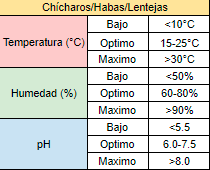

Betabel
El betabel se desarrolla mejor en suelos sueltos, bien drenados, ricos en materia orgánica y con un pH entre 6.0-7.5. Prefiere climas frescos y algo húmedos. La siembra se realiza en primavera u otoño, colocando las semillas a 1-2 cm de profundidad y con un distanciamiento de 5-10 cm entre plantas y 30-45 cm entre hileras. Es fundamental mantener el suelo húmedo pero evitando encharcamientos mediante riegos frecuentes. Responde bien al abonado orgánico antes de la siembra y a la fertilización nitrogenada durante el cultivo. El control de malezas es muy importante, realizando deshierbas manuales o aplicando herbicidas selectivos.

Brocoli y Coliflor
El brócoli y la coliflor se desarrollan mejor en suelos fértiles, bien drenados, ricos en materia orgánica y con un pH entre 6.0-7.5. Prefieren climas frescos y algo húmedos. Se pueden sembrar en distintas épocas del año eligiendo variedades adaptadas. Las semillas se plantan en semilleros y los plantines se trasplantan al terreno definitivo cuando tienen 4-6 hojas verdaderas, distanciados 45-60 cm entre plantas y 60-90 cm entre hileras. Requieren riegos frecuentes pero evitando encharcamientos. Responden bien al abonado orgánico antes del trasplante y aportes de fertilizantes compuestos durante el cultivo. El control de malezas es fundamental mediante deshierbes, acolchados u herbicidas. Es importante prevenir enfermedades fúngicas aplicando fungicidas preventivos. También hay que estar atentos a plagas de insectos.


Calabaza
Prepara bien el terreno realizando un laboreo profundo y eliminando malezas antes de la siembra o trasplante. Las calabazas prefieren suelos sueltos, bien drenados y ricos en materia orgánica. Puedes sembrar directamente o usar semilleros para obtener plántulas vigorosas y trasplantarlas cuando tengan 3-4 hojas verdaderas, a la profundidad y distancia recomendadas para la variedad. Instala estructuras de soporte o dejar espacio para que las plantas se extiendan. Realiza riegos profundos pero sin encharcar, manteniendo el suelo húmedo pero no empapado. Las calabazas requieren buena humedad durante el crecimiento vegetativo y formación de frutos. Aplica fertilizantes orgánicos balanceados ricos en nitrógeno, fósforo y potasio, siguiendo las dosis recomendadas para cada etapa de cultivo.

Cebolla
Prepara bien el terreno realizando un laboreo profundo y eliminando malezas antes de la siembra o trasplante. Las cebollas prefieren suelos sueltos, bien drenados y con buen contenido de materia orgánica. Puedes sembrar directamente en el campo o utilizar semilleros para obtener plántulas y trasplantarlas cuando tengan un tamaño adecuado, a la profundidad y distancias recomendadas para la variedad. Realiza riegos frecuentes pero moderados, manteniendo el suelo húmedo pero evitando el encharcamiento. Las cebollas son exigentes en agua, especialmente durante la formación y engrosamiento del bulbo. Aplica fertilizantes orgánicos balanceados ricos en nitrógeno, fósforo y potasio, siguiendo las recomendaciones para cada etapa de desarrollo del cultivo. Mantén el terreno libre de malezas mediante deshierbes manuales, acolchados o usando herbicidas autorizados.

Chicharo
Los chícharos se desarrollan mejor en suelos bien drenados, fértiles y con un pH cercano a la neutralidad (6.0-7.5). Prefieren climas frescos y húmedos, con temperaturas óptimas entre 13-18°C. Se siembran en primavera o a finales de invierno, colocando las semillas a 3-5 cm de profundidad y 7-15 cm entre plantas. Es importante regar con regularidad, manteniendo el suelo húmedo pero sin encharcar. Responden bien al abonado orgánico antes de sembrar y a la fertilización nitrogenada durante el crecimiento. Se aconseja instalar tutores o enrejados para que las plantas trepadores tengan soporte. Es fundamental controlar malezas mediante deshierbes y aplicar fungicidas preventivos contra enfermedades fúngicas.

Chicharos, Habas, Lentejas
Requieren suelos profundos, fértiles, bien drenados y con un pH entre 6.0-7.5. Se adaptan bien a climas frescos. La siembra se realiza en otoño o invierno, colocando las semillas a 5-10 cm de profundidad y 20-30 cm entre plantas en hileras separadas 60-80 cm. Necesitan riegos moderados, evitando encharcamientos. Responden bien al abonado orgánico y a la inoculación con bacterias fijadoras de nitrógeno antes de la siembra. El control de malezas es importante en las primeras etapas. Deben prevenirse enfermedades fúngicas aplicando fungicidas. La cosecha se hace arrancando las plantas cuando las vainas estén maduras y secas.



Chile
Prepara bien la parcela realizando un laboreo profundo y eliminando malezas antes del trasplante. Los chiles prefieren suelos sueltos, bien drenados y ricos en materia orgánica. Utiliza semilleros para obtener plántulas vigorosas y trasplántalas cuando tengan 15-20 cm de altura, a la profundidad y distancia recomendadas según la variedad. Instala tutores o estructuras de soporte. Realiza riegos frecuentes pero sin encharcar, manteniendo el suelo húmedo pero no empapado. Los chiles requieren buena humedad del suelo, especialmente durante la floración y cuajado de frutos. Aplica fertilizantes orgánicos balanceados ricos en nitrógeno, fósforo y potasio, siguiendo recomendaciones locales para cada etapa de cultivo.

Ejote y frijol
Prepara bien el terreno realizando un laboreo profundo y eliminando malezas antes de la siembra. Los ejotes y frijoles prefieren suelos sueltos, bien drenados y ricos en materia orgánica. Utiliza semillas certificadas de variedades adaptadas a tu región climática. Siembra a la profundidad y distancia recomendadas según la variedad, generalmente entre 2-5 cm de profundidad. Si cultivas ejotes, instala tutores o estructuras de soporte. Realiza riegos frecuentes pero sin encharcar, manteniendo el suelo húmedo pero no empapado. Son exigentes en agua durante la floración y formación de vainas o granos. Aplica fertilizantes orgánicos balanceados ricos en nitrógeno, fósforo y potasio, siguiendo recomendaciones locales para cada etapa de cultivo.


Garbanzo
Los garbanzos requieren suelos bien drenados, fértiles y ligeramente alcalinos (pH 6.5-8.5), evitando los excesivamente arcillosos o compactados. Es una planta que tolera bien el calor y la sequía, con temperaturas óptimas de 18-30°C, necesitando un período de frío invernal. Se siembra en primavera sin riesgo de heladas, colocando la semilla a 5-10 cm de profundidad y 40-60 cm entre hileras. Es importante regar después de la siembra y durante la floración y llenado de vainas. Responde bien al abonado orgánico antes de sembrar y al uso de inoculantes con bacterias fijadoras de nitrógeno. Hay que mantener el cultivo libre de malezas, especialmente en las primeras etapas, mediante escardas o herbicidas selectivos.

Huitlacoche
Preparar un terreno con suelos bien drenados, ricos en materia orgánica y un pH entre 6.0-7.5. Resembrar maíz de grano tierno o elotero. Durante la floración femenina, se inocula el hongo rociando o inyectando una suspensión de esporas directamente en los elotes jóvenes. Es importante mantener una humedad alta (80-90%) mediante riegos frecuentes para favorecer la infección.\r\nAproximadamente 10-15 días después de la inoculación aparecerán las agallas o tumores blancos y esponjosos característicos del huitlacoche en los elotes. Se deben controlar plagas y enfermedades aplicando insecticidas y fungicidas permitidos.

Jicama y Romeritos
Requiere suelos sueltos, bien drenados, ricos en materia orgánica y pH entre 5.5-7.0. Tolera climas cálidos y secos. Se siembra por semilla o por trozos de la raíz tuberosa. Se plantan a 20-30 cm de profundidad y 60-90 cm entre plantas. Necesita riegos frecuentes durante el desarrollo vegetativo. Requiere fertilización con abonos orgánicos y compuestos. Control de malezas mediante deshierbes. Estar atento a posibles plagas de insectos y enfermedades. La cosecha se realiza arrancando las raíces tuberosas de 6-9 meses después de la siembra.


Lechuga y espinaca
Tanto la lechuga como la espinaca se desarrollan mejor en suelos ricos en materia orgánica, bien drenados y con un pH entre 6.0-7.5. Prefieren climas frescos y algo húmedos. Se pueden sembrar en diferentes épocas del año, eligiendo variedades adaptadas según la estación. Las semillas se entierran superficialmente a 0.5-1 cm de profundidad. Es fundamental mantener el suelo húmedo pero evitando encharcamientos. Requieren abonado orgánico antes de sembrar y aportes de nitrógeno durante el cultivo. El control de malezas es muy importante, realizando deshierbes manuales o utilizando herbicidas selectivos. Hay que prevenir enfermedades fúngicas aplicando fungicidas de forma preventiva.


Nopales, Chayote y Quetiles
Nopales: Requieren suelos bien drenados, algo alcalinos (pH 7.0-8.5) y toleran la sequía. Se propagan por hijuelos o pencas. Se plantan a 2-3 m de separación. Necesitan riegos esporádicos y poca fertilización. Control de malezas y aplicación de fungicidas contra enfermedades.
Chayotes: Prefieren suelos ricos, bien drenados con pH 6.0-7.5. Se cultivan de semilla o fruto en primavera. Las plantas se guían sobre enramadas o tutores. Riegos frecuentes. Fertilización orgánica y control de malezas, plagas y enfermedades. Cosecha continua de frutos.
Quelites: Crecen fácilmente en suelos sueltos y algo húmedos con pH 6.5-7.5. Se siembran las semillas superficialmente cada 2-3 semanas para tener cosecha continua. Riegos ligeros pero constantes. Abonado orgánico. Control de malezas. Cosecha cortando las hojas tiernas.


Papa
Prepara bien el terreno realizando un laboreo profundo y eliminando malezas antes de la siembra. Las papas prefieren suelos sueltos, bien drenados y ricos en materia orgánica. Utiliza tubérculos-semilla certificados y sanos de variedades adaptadas a tu región. Siembra a la profundidad y distancia recomendadas, teniendo cuidado de no dañar los tubérculos. Realiza un aporque o aporca cuando las plantas tengan 20-30 cm de altura para permitir la formación adecuada de los tubérculos. Riega frecuentemente pero sin encharcar, manteniendo el suelo húmedo pero no empapado. Las papas son exigentes en agua durante la tuberización. Aplica fertilizantes orgánicos balanceados ricos en nitrógeno, fósforo y potasio, siguiendo recomendaciones para cada etapa de desarrollo.

Rabano
Aquí están las recomendaciones para el cultivo de rábanos en un solo texto:\r\nLos rábanos se adaptan bien a diversos tipos de suelo, siempre que estén bien drenados, sueltos y con un pH entre 6.0-7.5. Toleran una amplia gama de climas, desde frescos a cálidos. Se pueden sembrar casi todo el año, seleccionando las variedades apropiadas según la estación. Las semillas se siembran superficialmente a 0.5-1 cm de profundidad, con un distanciamiento de 2-3 cm entre plantas y 20-25 cm entre hileras. Requieren suelos húmedos pero bien drenados, regando frecuentemente sin encharcar. Un abonado orgánico previo a la siembra y una fertilización nitrogenada son recomendables. El control de malezas es muy importante mediante deshierbes manuales o usando herbicidas selectivos.

Tomate
Prepara bien el terreno realizando un laboreo profundo y eliminando malezas antes del trasplante. Los tomates prefieren suelos sueltos, bien drenados y ricos en materia orgánica. Utiliza semilleros para obtener plántulas vigorosas y trasplántalas cuando tengan 15-20 cm de altura, a la profundidad y distancia recomendadas según la variedad. Instala tutores para guiar el crecimiento de las plantas. Realiza riegos frecuentes pero sin encharcar, manteniendo el suelo húmedo pero no empapado. Los tomates son exigentes en agua, especialmente durante la floración y cuajado de frutos. Aplica fertilizantes orgánicos balanceados ricos en nitrógeno, fósforo y potasio, siguiendo las recomendaciones locales para cada etapa del cultivo. Mantén el suelo libre de malezas mediante deshierbes manuales, acolchados o herbicidas autorizados.

Zanahoria
Las zanahorias requieren suelos sueltos, bien drenados, ricos en materia orgánica y con un pH entre 6.0-6.8. Se adaptan a climas frescos y templados. La siembra se realiza en primavera u otoño, sembrando las semillas superficialmente a 0.5-1 cm de profundidad y 2-3 cm entre plantas en hileras separadas 20-30 cm. Es fundamental mantener el suelo húmedo pero sin encharcar, regando frecuentemente. Antes de sembrar se recomienda incorporar abono orgánico y durante el cultivo aplicar fertilizantes ricos en potasio. El control de malezas es muy importante mediante escardas manuales, uso de herbicidas o acolchados. Hay que prevenir enfermedades fúngicas del follaje con fungicidas.